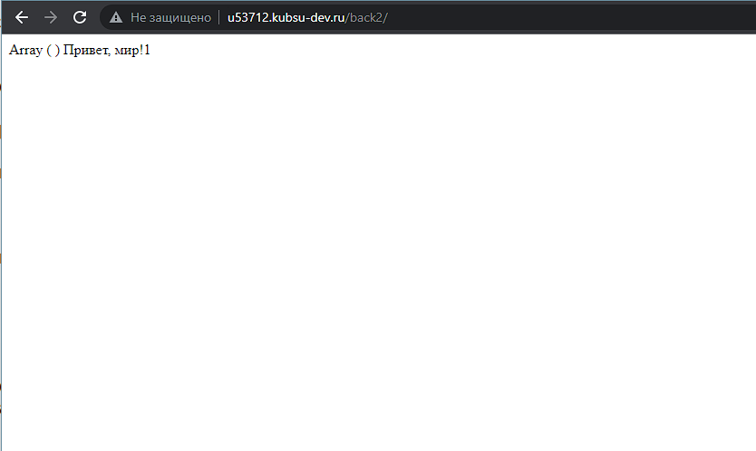
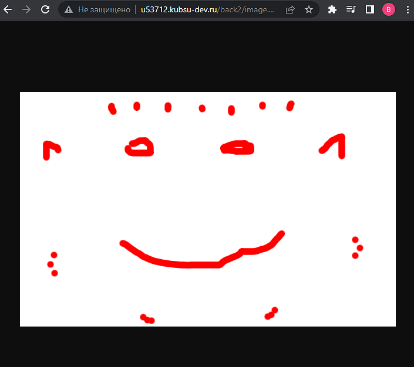
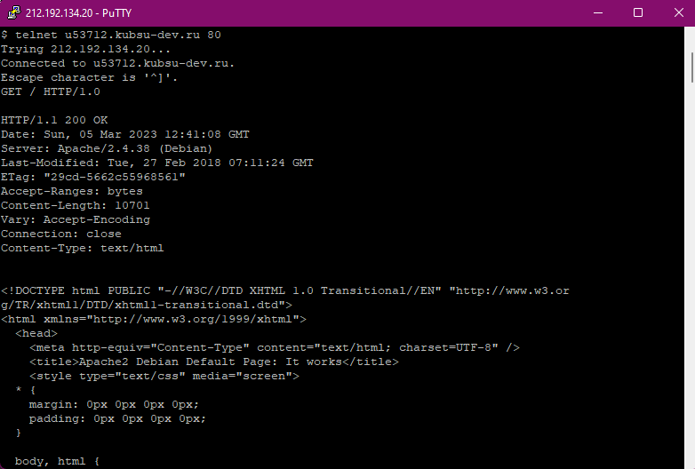
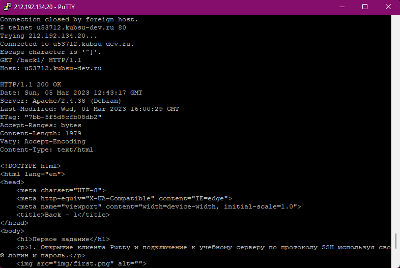
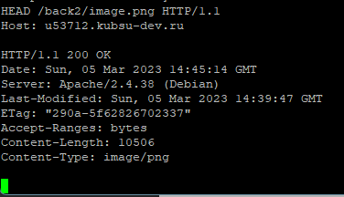
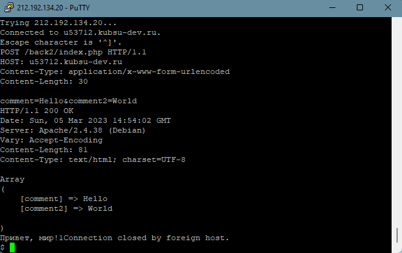
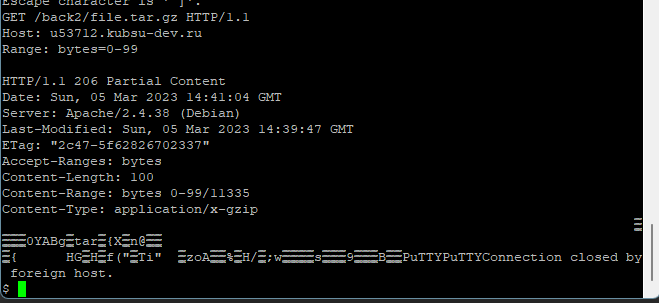
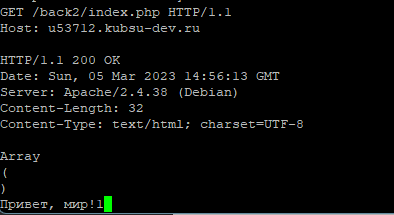

Залили файлы в каталоге files на веб-сервер через GIT. Проверили загрузку файлов в браузере из нашего учебного домена. Проверили работоспособность index.php.
 1.Получили главную страницу методом GET в протоколе HTTP 1.0; GET используется браузерами для загрузки страницы, файлов. Для отправки запроса на сервер и получения ответа достаточно скопировать запрос и нажать Ввод 2 раза. Для соединения с 80-м портом веб-сервера example.com достаточно выполнить команду: telnet example.com 80
2.Получили внутреннюю страницу методом GET в протоколе HTTP 1.1; HTTP 1.1 – появился заголовок запроса Host, позволяющий размещать несколько сайтов на сервере с одним IP-адресом. Host – передается домен или IP-адрес, на который отправляется запрос.
3.Определили размер файла file.tar.gz, не скачивая его; HTTP-метод HEAD запрашивает заголовки, идентичные тем, что возвращаются, если указанный ресурс будет запрошен с помощью HTTP-метода GET. Ответ на метод HEAD не должен содержать тело.
4.Определили медиатип ресурса /image.png;
5.Отправили комментарий на сервер по адресу /index.php; Метод запроса POST предназначен для направления запроса, при котором веб-сервер принимает данные, заключённые в тело сообщения, для хранения. Тип тела запроса указывается в заголовке Content-Type. application/x-www-form-urlencoded: значения кодируются в кортежах с ключом, разделённых символом '&', с '=' между ключом и значением.
6.Получить первые 100 байт файла /file.tar.gz; Заголовок запроса Range указывает серверу какую часть документа ему необходимо вернуть. Range=0-99 - первые 100 байт документа.
7.Определили кодировку ресурса /index.php. Используем метод GET. Заголовок ответа Content-Type указывает кодировку файла.
